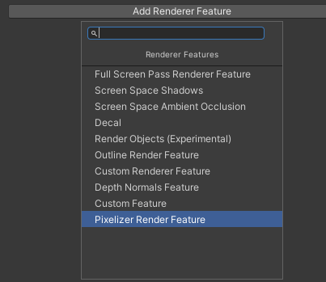
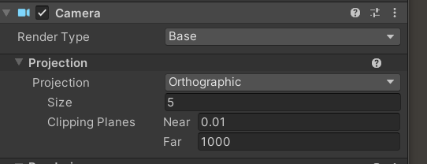
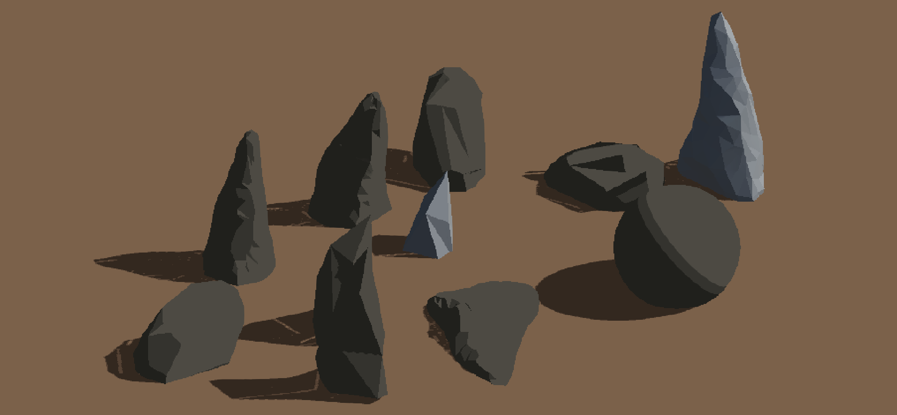
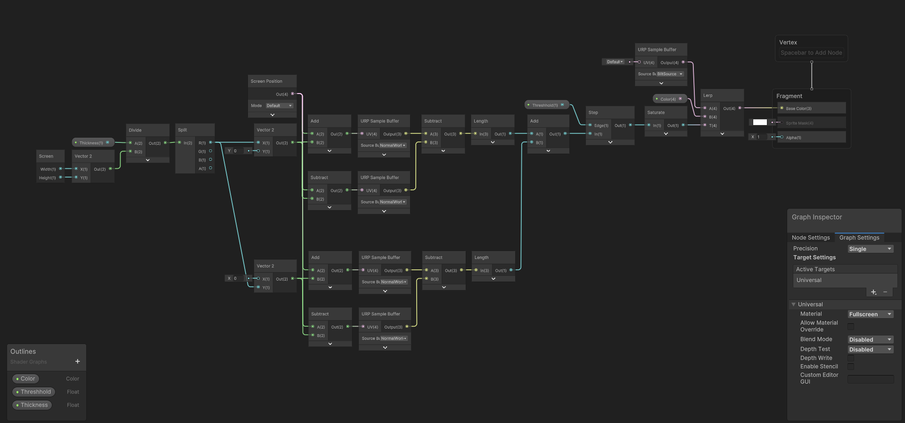

Creating 3d pixel art in Unity 2022.3 URP
Hey there! The 3d pixel art effect is a very cool way to create an interesting indie game look for your game! We need a few different systems to achieve this:
- The pixel effect
- A toon shader with custom lighting
- An outline effect
I. PIXELIZATION
The most important system is the pixelization. This can be done fairly easy by changing the screen pixel size in the project settings. But this gives limited control over the final result and will pixelize everything. So UI can not be excluded.
To fix this, we can write a custom render feature to add a custom pass to unity's rendering system. This feature has changed a lot over the recent unity versions. I am using unity 2022.3. Check this page for more information on the Custom Renderer Features
First we need a render feature to control the pass.
PixelizerRenderFeature.cs:
using UnityEngine;
using UnityEngine.Rendering;
using UnityEngine.Rendering.Universal;
public class PixelizerRenderFeature : ScriptableRendererFeature
{
[SerializeField] private PixelizePassSettings _settings;
private PixelizeRenderPass _pixelizePass;
public override void Create()
{
_pixelizePass = new PixelizeRenderPass(_settings);
}
public override void AddRenderPasses(ScriptableRenderer renderer, ref RenderingData renderingData)
{
#if UNITY_EDITOR
if (renderingData.cameraData.isSceneViewCamera)
return;
#endif
renderer.EnqueuePass(_pixelizePass);
}
}
[System.Serializable]
public class PixelizePassSettings
{
public int ScreenHeight = 480;
public RenderPassEvent RenderPassEvent = RenderPassEvent.BeforeRenderingPostProcessing;
}This is the layout of a default custom render feature. First we get the settings that control the pixelizer and then we create the pass and enqueue it, where PixelizeRenderPass gives the order where unity will do the pixel pass. We want to render the pixel effect after we apply toon shading and the outline effect - so before the post processing passes will be fine!
Next we will write the pass that controls the way unity will apply the pixel effect.
PixelizeRenderPass.cs:
using UnityEngine;
using UnityEngine.Rendering;
using UnityEngine.Rendering.Universal;
public class PixelizeRenderPass : ScriptableRenderPass
{
private PixelizePassSettings _settings;
private RTHandle _source;
private RenderTargetIdentifier _destination;
private int _pixelBufferID = Shader.PropertyToID("_PixelBuffer");
private Material _material;
private int _pixelScreenWidth, _pixelScreenHeight;
public PixelizeRenderPass(PixelizePassSettings settings)
{
_settings = settings;
renderPassEvent = settings.RenderPassEvent;
if (_material == null)
_material = CoreUtils.CreateEngineMaterial("Hidden/Pixelize");
}
public override void OnCameraSetup(CommandBuffer cmd, ref RenderingData renderingData)
{
if (_material == null)
return;
_source = renderingData.cameraData.renderer.cameraColorTargetHandle;
RenderTextureDescriptor descriptor = renderingData.cameraData.cameraTargetDescriptor;
_pixelScreenHeight = _settings.ScreenHeight;
_pixelScreenWidth = (int)(_pixelScreenHeight * renderingData.cameraData.camera.aspect);
_material.SetVector("_PixelScreenSize", new Vector2(_pixelScreenWidth, _pixelScreenHeight));
descriptor.width = _pixelScreenWidth;
descriptor.height = _pixelScreenHeight;
cmd.GetTemporaryRT(_pixelBufferID, descriptor, FilterMode.Point);
_destination = new RenderTargetIdentifier(_pixelBufferID);
}
public override void Execute(ScriptableRenderContext context, ref RenderingData renderingData)
{
CommandBuffer cmd = CommandBufferPool.Get();
using (new ProfilingScope(cmd, new ProfilingSampler("Pixelize Pass")))
{
cmd.Blit(_source, _destination, _material);
cmd.Blit(_destination, _source);
}
context.ExecuteCommandBuffer(cmd);
CommandBufferPool.Release(cmd);
}
public override void OnCameraCleanup(CommandBuffer cmd)
{
cmd.ReleaseTemporaryRT(_pixelBufferID);
}
}This pass script takes the settings from the render feature and uses them to create a material from a pixel shader. In the new unity version mainly RTHandles and blit them with a material in the Execute() method (like Update()). Note in the current version untiy doesn't allow to blit a RTHandle to itself so we will need to create a buffer.
The last script for the pixelizer feature is the shader to finally do the pixel effect.
Pixelize.hlsl:
Shader "Hidden/Pixelize"
{
Properties
{
_MainTex ("Texture", 2D) = "white"
}
SubShader
{
Tags
{
"RenderType"="Opaque" "RenderPipeline" = "UniversalPipeline"
}
HLSLINCLUDE
#pragma vertex vert
#pragma fragment frag
#include "Packages/com.unity.render-pipelines.universal/ShaderLibrary/Core.hlsl"
struct Attributes
{
float4 positionOS : POSITION;
float2 uv : TEXCOORD0;
};
struct Varyings
{
float4 positionHCS : SV_POSITION;
float2 uv : TEXCOORD0;
};
TEXTURE2D(_MainTex);
float4 _MainTex_ST;
SamplerState sampler_point_clamp;
float2 _PixelScreenSize;
Varyings vert(Attributes IN)
{
Varyings OUT;
OUT.positionHCS = TransformObjectToHClip(IN.positionOS.xyz);
OUT.uv = TRANSFORM_TEX(IN.uv, _MainTex);
return OUT;
}
ENDHLSL
Pass
{
Name "Pixelation"
HLSLPROGRAM
half4 frag(Varyings IN) : SV_TARGET
{
float2 pixelPosition = floor(IN.uv * _PixelScreenSize);
float2 center = (pixelPosition + 0.5) / _PixelScreenSize;
return SAMPLE_TEXTURE2D(_MainTex, sampler_point_clamp, center);
}
ENDHLSL
}
}
}This shader takes the screen width and height (in pixels) an caculates the position. The pixelation effect is achieved by sampling the texture at a lower resolution based on the _PixelScreenSize variable. This shader is written for the Universal Render Pipeline, as for the upcoming effects.
To set up this effect in unity we will need to add a new render feature in the URP Asset (probably "UniversalRenderPipelineAsset_Renderer"):
To get the best results set the camera to an orthographic projection. This is because the pixelation works really bad with depth. In the perspective projection the objects in the back will be rendered with very few pixels while the objects in front will have way more pixels.
You might also want to add the shader in the project settings to be "always include".
RESULT
II. TOON EFFECT
The toon effect is also important here. Otherwise it will become a pixel mess.
This effect can be achieved best with a shadergraph to create materials. I used as a reference this video from NedMakesGame
Be aware that in the newer unity versions you might need to define the keywords in the Lighting.hlsl script and change some code slightly:
Lighting.hlsl
#pragma multi_compile _ _MAIN_LIGHT_SHADOWS
#pragma multi_compile _ _MAIN_LIGHT_SHADOWS_CASCADE
#pragma multi_compile _ _SHADOWS_SOFT
#pragma multi_compile _ _ADDITIONAL_LIGHTS
#pragma multi_compile _ _ADDITIONAL_LIGHT_SHADOWS
#pragma multi_compile _ LIGHTMAP_SHADOW_MIXING
#pragma multi_compile _ SHADOWS_SHADOWMASK
#pragma multi_compile _ ADDITIONAL_LIGHT_CALCULATE_SHADOWS
#ifndef CUSTOM_LIGHTING_INCLUDED
#define CUSTOM_LIGHTING_INCLUDED
void CalculateMainLight_float(float3 WorldPos, out float3 Direction, out float3 Color, out half DistanceAtten, out half ShadowAtten) {
#if SHADERGRAPH_PREVIEW
Direction = half3(0.5, 0.5, 0);
Color = 1;
DistanceAtten = 1;
ShadowAtten = 1;
#else
#if SHADOWS_SCREEN
half4 clipPos = TransformWorldToHClip(WorldPos);
half4 shadowCoord = ComputeScreenPos(clipPos);
#else
half4 shadowCoord = TransformWorldToShadowCoord(WorldPos);
#endif
Light mainLight = GetMainLight(shadowCoord);
Direction = mainLight.direction;
Color = mainLight.color;
DistanceAtten = mainLight.distanceAttenuation;
ShadowAtten = mainLight.shadowAttenuation;
#endif
}
float GetLightIntensity(float3 color) {
return max(color.r, max(color.g, color.b));
}
void AddAdditionalLights_float(float Smoothness, float3 WorldPosition, float3 WorldNormal, float3 WorldView,
float MainDiffuse, float MainSpecular, float3 MainColor,
out float Diffuse, out float Specular, out float3 Color) {
float mainIntensity = GetLightIntensity(MainColor);
Diffuse = MainDiffuse * mainIntensity;
Specular = MainSpecular * mainIntensity;
Color = MainColor * (MainDiffuse + MainSpecular);
#ifndef SHADERGRAPH_PREVIEW
int pixelLightCount = GetAdditionalLightsCount();
for (int i = 0; i < pixelLightCount; ++i) {
Light light = GetAdditionalLight(i, WorldPosition);
half NdotL = saturate(dot(WorldNormal, light.direction));
half atten = light.distanceAttenuation * light.shadowAttenuation * GetLightIntensity(light.color);
half thisDiffuse = atten * NdotL;
half thisSpecular = LightingSpecular(thisDiffuse, light.direction, WorldNormal, WorldView, 1, Smoothness);
Diffuse += thisDiffuse;
Specular += thisSpecular;
Color += light.color * (thisDiffuse + thisSpecular);
}
half total = Diffuse + Specular;
Color = total <= 0 ? MainColor : Color / total;
#endif
}
#endifRESULT
III. OUTLINES
The outline effect is not as important as in some other toon art styles, but highlighting the edges of some objects like stones is definetly needed to even be able to see clear edges!
This effect will be like the pixelation effect. We will create a custom render feature and shader to apply outlines to the objects.
OutlineRenderFeatur.cs:
using UnityEngine;
using UnityEngine.Rendering;
using UnityEngine.Rendering.Universal;
public class OutlineRenderFeature : ScriptableRendererFeature
{
[SerializeField] private OutlinePassSettings _settings;
private OutlineRenderPass _outlinePass;
public override void Create()
{
_outlinePass = new OutlineRenderPass(_settings, name);
}
public override void AddRenderPasses(ScriptableRenderer renderer, ref RenderingData renderingData)
{
#if UNITY_EDITOR
if (renderingData.cameraData.isSceneViewCamera)
return;
#endif
renderer.EnqueuePass(_outlinePass);
}
protected override void Dispose(bool disposing)
{
_outlinePass.Dispose();
}
}
[System.Serializable]
public class OutlinePassSettings
{
public Color OutlineColor;
public float Threshhold;
public float Thickness;
public RenderPassEvent RenderPassEvent = RenderPassEvent.BeforeRenderingPostProcessing;
}The only difference to the pixelize render feature is that we utilized the Dispose() methode to Dispose the render pass.
OutlineRenderPass.cs:
using UnityEngine;
using UnityEngine.Rendering;
using UnityEngine.Rendering.Universal;
public class OutlineRenderPass : ScriptableRenderPass
{
private OutlinePassSettings _settings;
private RTHandle _source;
private RTHandle _destination;
private RTHandle _temp;
private string _profilerTag;
private Material _material;
public OutlineRenderPass(OutlinePassSettings settings, string tag)
{
profilingSampler = new ProfilingSampler("Outlines");
_settings = settings;
renderPassEvent = settings.RenderPassEvent;
_profilerTag = tag;
if (_material == null)
_material = CoreUtils.CreateEngineMaterial("Shader Graphs/Outlines");
}
public override void OnCameraSetup(CommandBuffer cmd, ref RenderingData renderingData)
{
if (_material == null)
return;
ConfigureInput(ScriptableRenderPassInput.Normal);
var descriptor = renderingData.cameraData.cameraTargetDescriptor;
descriptor.depthBufferBits = 0;
RenderingUtils.ReAllocateIfNeeded(ref _temp, descriptor, name: "_TemporaryColorTexture");
var renderer = renderingData.cameraData.renderer;
_source = _destination = renderer.cameraColorTargetHandle;
_material.SetColor("_Color", _settings.OutlineColor);
_material.SetFloat("_Threshhold", _settings.Threshhold);
_material.SetFloat("_Thickness", _settings.Thickness);
}
public override void Execute(ScriptableRenderContext context, ref RenderingData renderingData)
{
if (renderingData.cameraData.cameraType == CameraType.Preview)
return;
CommandBuffer cmd = CommandBufferPool.Get(_profilerTag);
using (new ProfilingScope(cmd, new ProfilingSampler("Outline Pass")))
{
Blitter.BlitCameraTexture(cmd, _source, _temp, _material, 0);
Blitter.BlitCameraTexture(cmd, _temp, _destination, Vector2.one);
}
context.ExecuteCommandBuffer(cmd);
CommandBufferPool.Release(cmd);
}
public override void OnCameraCleanup(CommandBuffer cmd)
{
_source = null;
_destination = null;
}
public void Dispose()
{
_temp?.Release();
}
}If you are coming from an older unity version the most important line is probably ConfigureInput(ScriptableRenderPassInput.Normal); This is needed for the shader to get the necessary normal information. Otherwise this is not to different from the pixel pass.
For the outline shader we can just use shader graph. Important is that this will be a fullscreen shader!
Outlines.shadergraph:
The shader mainly works with the new URP Sample Buffer node and uses the normals to determine if there should be an outline.
RESULT